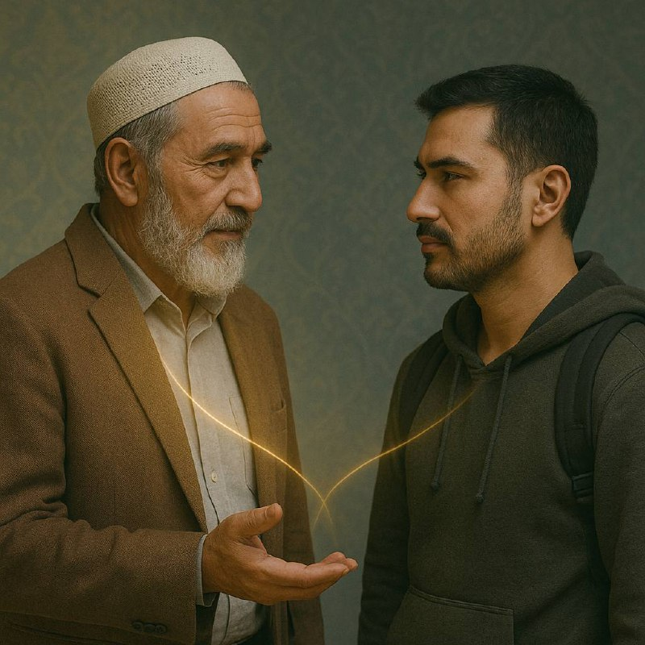

Устоз аҳамияти

Инсонда икки йўл бор: ё ўзи йўл очади, ё ўзига йўл кўрсатадиган зотга устозга эргашади. Устоз — бу Аллоҳнинг сиз учун юборган раҳмат элчисидир. У сизга ҳақиқатни айтса, бу сизнинг имтиҳонингиз — қабул қиласизми ёки нафс билан тортиша бошлайсизми.
Шуни англаб олинг:
Устоз маслаҳати баъзида ақлингизга тўғри келмаслиги мумкин. Чунки қозонга тушган гуруч у ҳали палов эканлигини англатмайди. Устоз эса кўплаб ошлар дамлаган ошпаздир. Ҳақиқий англаш — кўплаб амаллардан кейин келади.
Нега устоз маслаҳатни баъзида тушуниб бўлмайди?
Сабаби содда:
• Сизда устозда бор тажриба йўқ, устига устак, кайфият билан шогирд ҳиссиёт билан фикр юритади. Устоз ўгити ҳиссиётдан холи.
• Маслаҳат — ақлий ва руҳий салоҳият тагидаги қатъийлик талаб этади.
• Шайтон сизни маслаҳатни кечиктиришга, эртага қолдиришга ундайди.
Нима қилиш керак?
1. Устозга итоат қилинг – агар устозингиз сизнинг бир пайтингизда 10 марта йиқилган бўлса, у сизнинг келажагингизни тажрибаси билан кўриб турибди.
2. Муҳокама эмас, ҳаракат қилинг – кўп ўйлаш шубҳа келтиради. Иймон эса ҳаракат орқали мустаҳкамланади.
3. Ҳар бир маслаҳатни амалга оширинг — дарҳол. Шаръий манбаларда: “Энг яхшингиз — яхши ишни тез қиладиганингиздир”.
Саҳобалар буюк устоз - Расулуллоҳ соллаллоҳу алайҳи васалламнинг ҳар бир амрларини сўзсиз, тезкор ва иймон билан амалга оширишарди. Уларнинг улкан ютуқлари шунинг самарасидир. Улар тушунмагандек кўринган ишни ҳам қилдилар — натижада қалблар очилди, дунё ўзгарди.
Бугунги кунда кўпчилик “мен тушунишни хоҳлайман” деган баҳона билан орқада қоляпти. Аммо ақл ҳар доим сизни олиб чиқмайди — кўпинча ақл сизни эҳтиёт бўлишга мажбурлайди. Ҳолбуки, улкан ўзгаришлар – ишонч ва амалдан бошланади.
Устоз – бу сизнинг келажакдаги ўзингиздир. Уни эшитинг. Ишонинг. Ва шубҳасиз амал қилинг.
Тез ўсишни хоҳласангиз – тушунишни кутманг. Амал қилинг.
Бонус фикр:
Устоз ўгитини ва илмини олишда рационаллик эмас балки, муҳаббат ва ихлос муҳим! Устозни ҳурмат қилинг ва севинг!